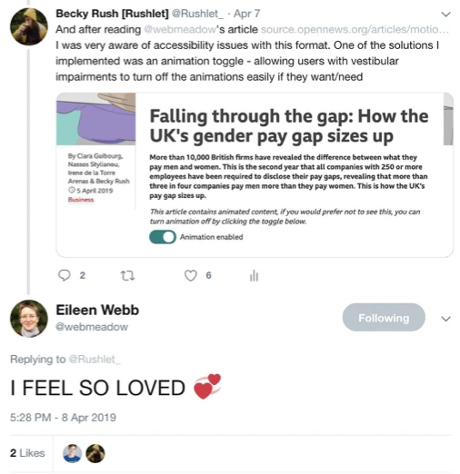

BBC NEWS · DATA STORYTELLING
Falling through the pay gap
I led development of a BBC News scrollytelling story that animated more than 10,000 company data points and gave readers control over motion.

Getting 10,000 dots to move
We wanted each company in the dataset to appear as a dot and move into different arrangements as readers scrolled. My first D3 and Canvas prototype slowed down under that load. A designer on the team suggested WebGL, so I built a prototype with regl to move the rendering work to the GPU. Once that worked, we could commit to the design.
For the histogram, I used D3 to calculate where the dots should go and regl to draw them. I put the axes, labels and highlighted points in an SVG layer over the canvas.
Making the story work without animation
I added a motion toggle at the start of the article, before readers encountered any animation. I also made sure readers could tab through the content and use the arrow keys to scroll. When JavaScript was unavailable, static charts gave readers visual context alongside the text.

Taking the approach into the next story
For How much warmer is your city?, I adapted the scrolling library for the BBC’s project tooling. The team extended the motion toggle to control the globe, chart transitions and illustrations, and used the reader’s reduced-motion preference to set its initial state.